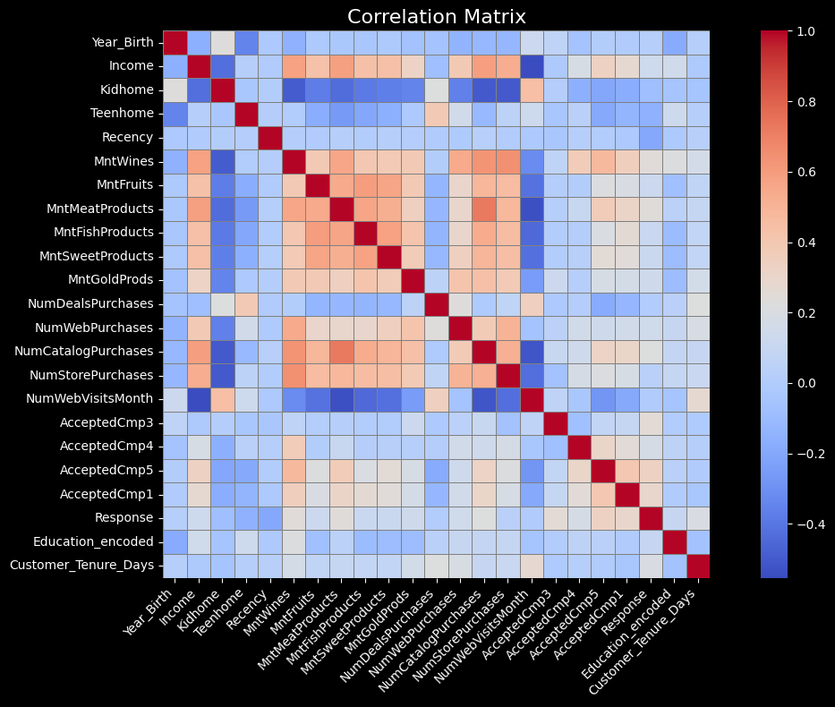

Introduction
This project aimed to develop a machine learning pipeline capable of predicting whether a customer would respond to a marketing campaign. The solution involved supervised learning with models like Logistic Regression, Random Forest, and XGBoost. The full pipeline was tracked and orchestrated using MLflow.
The Challenge
Dealing with a highly imbalanced dataset where only ~15% of customers responded, and ensuring the model could generalize well without overfitting.
The Solution
A scalable ML experimentation workflow using MLflow for tracking and evaluation. The final solution involved a tuned XGBoost model with custom threshold adjustment to optimize the precision-recall tradeoff.
Process
The approach involved several key phases:
01
Data Exploration
Performed statistical analysis and visualizations. Identified class imbalance (~15% positive class).
02
Feature Engineering
Encoded variables, engineered new features (e.g., customer tenure), and scaled inputs for logistic regression.
03
MLflow Experiments
Trained over 30 models using varied hyperparameters and evaluated them using MLflow metrics and artifacts.
04
Threshold Tuning
Analyzed precision-recall vs. threshold curves to determine the optimal decision threshold (0.55).
01. State of the Art
Compared traditional models (Logistic Regression, Random Forest) with advanced techniques like XGBoost, including early stopping and scale_pos_weight tuning.
Workflow Summary
1. Exploratory Data Analysis (EDA)
I began by exploring the dataset to understand its structure and challenges. The dataset was imbalanced, with only about 15% of customers having responded to past campaigns. Feature distributions, correlation matrices, and missing value analysis were visualized to guide preprocessing.
A correlation matrix showing how customer behavior features relate.
2. Data Preprocessing
- Missing values in the
Incomecolumn were imputed using the median strategy. - Logistic Regression required feature scaling using
StandardScaler. - All preprocessing steps were applied carefully to preserve feature meaning for later explainability.
3. ML Model Training with MLflow
I trained Logistic Regression, Random Forest, and XGBoost models across multiple hyperparameters and tracked all experiments using MLflow. The system logged metrics (accuracy, precision, recall, F1-score), confusion matrix plots, and all serialized artifacts.
Precision and recall performance across thresholds.
4. Threshold Tuning
Instead of using the default 0.5 threshold, I plotted precision and recall curves against decision thresholds to find the best tradeoff. I selected threshold = 0.55 to maximize the F1-score while maintaining good precision.
5. Feature Importance
Using XGBoost's built-in feature importance, I discovered that AcceptedCmp5 was the most informative feature. This means customers who accepted the most recent past campaign were the most likely to accept a new one.
Top features ranked by their contribution to XGBoost's decisions.
Feature Interpretation
The model's most important feature, AcceptedCmp5, indicates whether a customer accepted campaign number five. This binary variable (1 = yes, 0 = no) proved to be a strong signal. It makes intuitive sense that recent campaign engagement predicts future responsiveness.
Final Model Performance
- Accuracy: 92%
- Precision (class 1): 0.69
- Recall (class 1): 0.86
- F1-score (class 1): 0.76
These results indicate that the final model can successfully identify most true responders with a low false positive rate, enabling smarter campaign targeting.

Results
92%
Overall Accuracy
0.76
F1 Score for Class 1
0.86
Recall for Class 1
The final XGBoost model achieved a strong balance between precision (0.69) and recall (0.86) using a tuned threshold of 0.55. This performance significantly outperformed baseline models and enabled confident decision-making in campaign targeting.